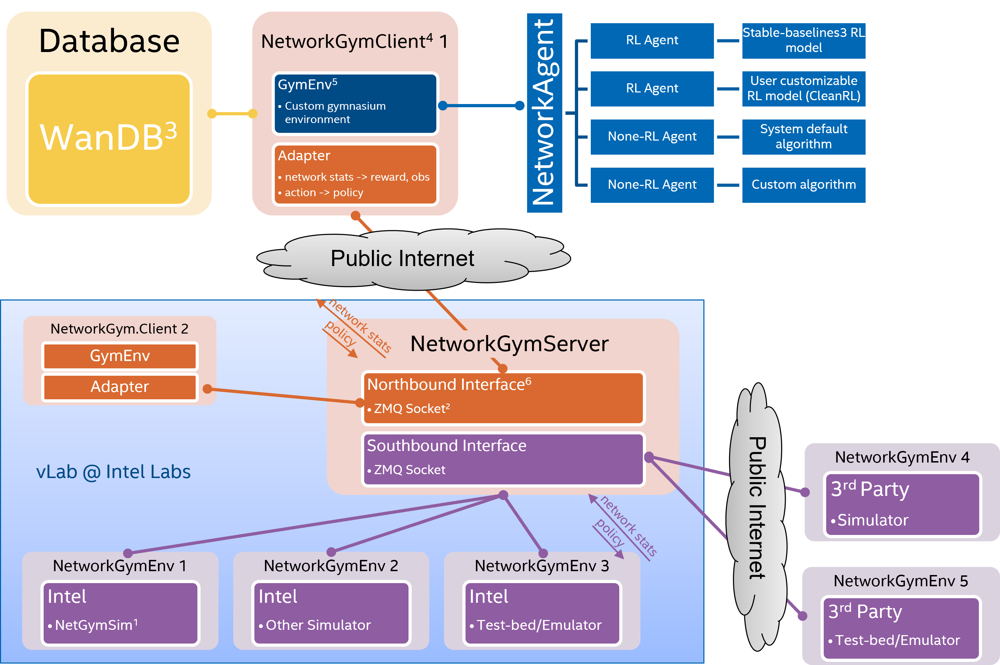
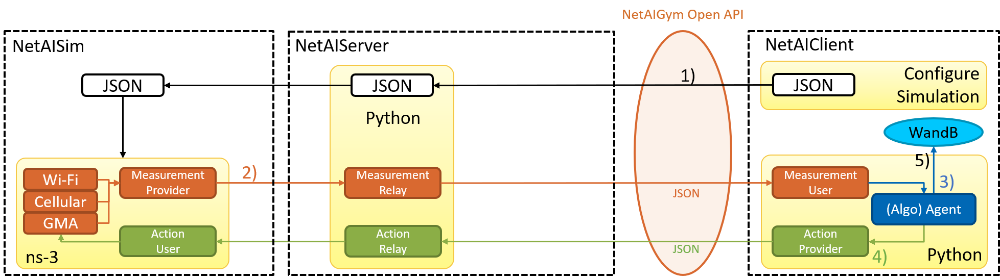

Quickstart#
Accessing the NetworkGym Testbed via vLab#

We provide access to NetworkGymServer and NetworkGymEnv through vLab machines (Requst Access), facilitating collaboration with MLWiNS/RINGs universities. The NetworkGym Northbound Interface allows a NetworkGymClient to establish a connection with the NetworkGym Environment, either through the public internet or Intel’s internal network. In case of any access issues, feel free to reach out to us at netaigym@gmail.com.
Additionally, we plan to launch NetworkGym Sim-aaS via Intel DevCloud, making it available to all Intel developers. Meanwhile, we are actively collaborating with the research community to enhance NetworkGymSim with new use-cases and capabilities, such as 5G/O-RAN, distributed computing, RAN energy saving, predictive QoS, and more.
Basic Usage#

Once you have gained access to vLab NetworkGym Server, you can begin by downloading the client software, NetworkGymClient, to initiate your simulations.
▶️ Upon starting the NetworkGymClient, the following series of steps occur:
The NetworkGymClient initiates the process by sending a JSON configuration file to the Server, prompting the launch of an ns-3 simulation.
🔁 During the simulation, the process repeats as follows:
The Simulator collects measurement metrics and communicates them to the Server.
The Server forwards the measurements to the NetworkGymClient using the NetworkGym Open API.
An Algorithm Agent, which could be AI or non-AI, computes an action based on the received measurements and stores relevant data in WandB.
The NetworkGymClient transmits the computed action to the Simulator through the NetworkGym Open API, enabling the simulation to continue with the new action.
⏹️ When the NetworkGym or the simulation concludes:
The data stored in Wandb can be conveniently visualized on the Wandb website.
The provided python code below demonstrates how to interact with NetworkGym environments.
Initializing Environments#
Initializing environments in NetworkGym is straightforward and can be done via the network_gym_client package:
from network_gym_client import Env as NetworkGymEnv
# Create a network env using the client_id and configure file arguments.
env = NetworkGymEnv(client_id, config_json)
This will return an Env for users to interact with.
Interacting with the Environment#
The classic “agent-environment loop” is implemented using the following code:
from network_gym_client import load_config_file
from network_gym_client import Env as NetworkGymEnv
client_id = 0
env_name = "nqos_split"
config_json = load_config_file(env_name)
# Create a network env using the client_id and configure file arguments.
env = NetworkGymEnv(client_id, config_json)
num_steps = 1000
obs, info = env.reset()
for step in range(num_steps):
action = env.action_space.sample() # agent policy that uses the observation and info
obs, reward, terminated, truncated, info = env.step(action)
# If the episode is up (environment still running), then start another one
if truncated:
obs, info = env.reset()
# If the environment is terminated, exit
if terminated:
break
Explaining the code#
First, the configuration file is loaded using the load_config_file function by providing the selected environment name. Second, an environment is created using NetworkGymEnv class with the additional keywords client_id and config_json. A client_id is associated with a dedicated environment worker until the environment session ends. A client may use different client_id to launch parallel environments. After initializing the environment, we `reset the environment to obtain the first observation of the environment.
Next, the agent performs an action in the environment, step. As a result, the agent receives a new observation from the updated environment along with a reward for taking the action. One such action-observation exchange is referred to as a timestep.
In NetworkGym, an environment includes multiple episodes. The terminal state for a episode and environment is signaled using the trucated and terminated signal returned by step. For example, after a fixed number of timesteps, an episode is ended by issueing a truncated signal. And after multiple episodes, the environment terminates with a terminated signal. If truncated is true then reset should be called next to restart the episode. If the termianted is true then the client needs to restart the environement.
In NetworkGym, an environment includes multiple episodes. The terminal state for an episode and environment is signaled using the truncated and terminated signals returned by step. For example, after a fixed number of timesteps, an episode is ended by issuing a truncated signal. After multiple episodes, the environment terminates with a terminated signal. If truncated is True, then reset should be called next to restart the episode. If the terminated is True, then the client needs to restart the environment. See Handling Time Limits for more details.
An example is provided in the following.
Action and observation spaces#
Every environment specifies the format of valid actions and observations with the env.action_space and env.observation_space attributes. This helps in understanding the expected input and output of the environment, as all valid actions and observations should be contained within the respective space.
In the provided example, we sampled random actions via env.action_space.sample() instead of using an agent policy, mapping observations to actions as users may prefer. Additionally, some of the NetworkGym environments have system default algorithms, which can be enabled by sending an “empty” action to the environment, as shown below:
# No action from the RL agent -> the environment will use the system default policy
action = np.array([])
obs, reward, terminated, truncated, info = env.step(action)
Every environment should have the attributes action_space and observation_space, both of which should be instances of classes that inherit from Space. Gymnasium supports a majority of possible spaces users might need:
Box: describes an n-dimensional continuous space. It’s a bounded space where we can define the upper and lower limits which describe the valid values our observations can take.Discrete: describes a discrete space where {0, 1, …, n-1} are the possible values our observation or action can take. Values can be shifted to {a, a+1, …, a+n-1} using an optional argument.Dict: represents a dictionary of simple spaces.Tuple: represents a tuple of simple spaces.MultiBinary: creates an n-shape binary space. Argument n can be a number or a list of numbers.MultiDiscrete: consists of a series ofDiscreteaction spaces with a different number of actions in each element.
Modifying the environment#
NetworkGym also supports the Wrappers provided by Gymnasium, enabling the customization of environments with additional functionalities. Some examples include:
TimeLimit: Issue a truncated signal if a maximum number of timesteps has been exceeded (or the base environment has issued a truncated signal).ClipAction: Clip the action such that it lies in the action space (of typeBox).RescaleAction: Rescale actions to lie in a specified intervalTimeAwareObservation: Add information about the index of timestep to observation. In some cases helpful to ensure that transitions are Markov.FlattenObservation: Observation wrapper that flattens the observation.NormalizeObservation: This wrapper will normalize observations s.t. each coordinate is centered with unit variance.
env = NetworkGymEnv(args.client_id, config_json)
normal_obs_env = NormalizeObservation(env)